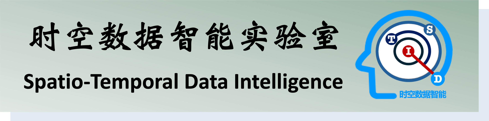

时空大数据智能实验室（Spatio-Temporal Data Intelligence, 简称STDI）依托大数据系统软件国家工程实验室、 北京理工大学电子政务研究院，面向深度利用数据资源的国家战略需求，聚焦大数据分析挖掘的科学问题，创新关键技术，自主研制系统，智能实现数据价值。 实验室现有中国工程院院士2人，国家高层次领军人才3人，近年来主持承担国家重点研发计划项目、国家自然科学基金项目、北京市重大科技项目等多个项目，经费累计近1亿元，获得国家科技进步一等奖、中国指挥与控制学会科技进步奖（技术发明类）一等奖、全国优秀博士学位论文、ACM SIGSPATIAL中国分会优博奖等多项荣誉，支持了政法科技、公共安全、社会服务等国家任务。 实验室欢迎优秀青年人才、博士生、硕士生、高年级本科生加入，让我们助您成长，共同探求时空数据智能的独特魅力，为发展新质生产力提供科技支撑。
实验室现有中国工程院院士2人，国家高层次领军人才3人，近年来主持承担国家重点研发计划项目、国家自然科学基金项目、北京市重大科技项目等多个项目，经费累计近1亿元，获得国家科技进步一等奖、中国指挥与控制学会科技进步奖（技术发明类）一等奖、全国优秀博士学位论文、ACM SIGSPATIAL中国分会优博奖等多项荣誉，支持了政法科技、公共安全、社会服务等国家任务。
实验室欢迎优秀青年人才、博士生、硕士生、高年级本科生加入，让我们助您成长，共同探求时空数据智能的独特魅力，为发展新质生产力提供科技支撑。
地址 中国北京市海淀区中关村南大街5号 北京理工大学时空大数据智能实验室 (STDI)
联系方式 座机: (86) 010 6891 4976 邮箱: sjruan AT bit.edu.cn
技术维护：sjruan AT bit.edu.cn
更新至 2024-09-13
© STDI, 始于2011